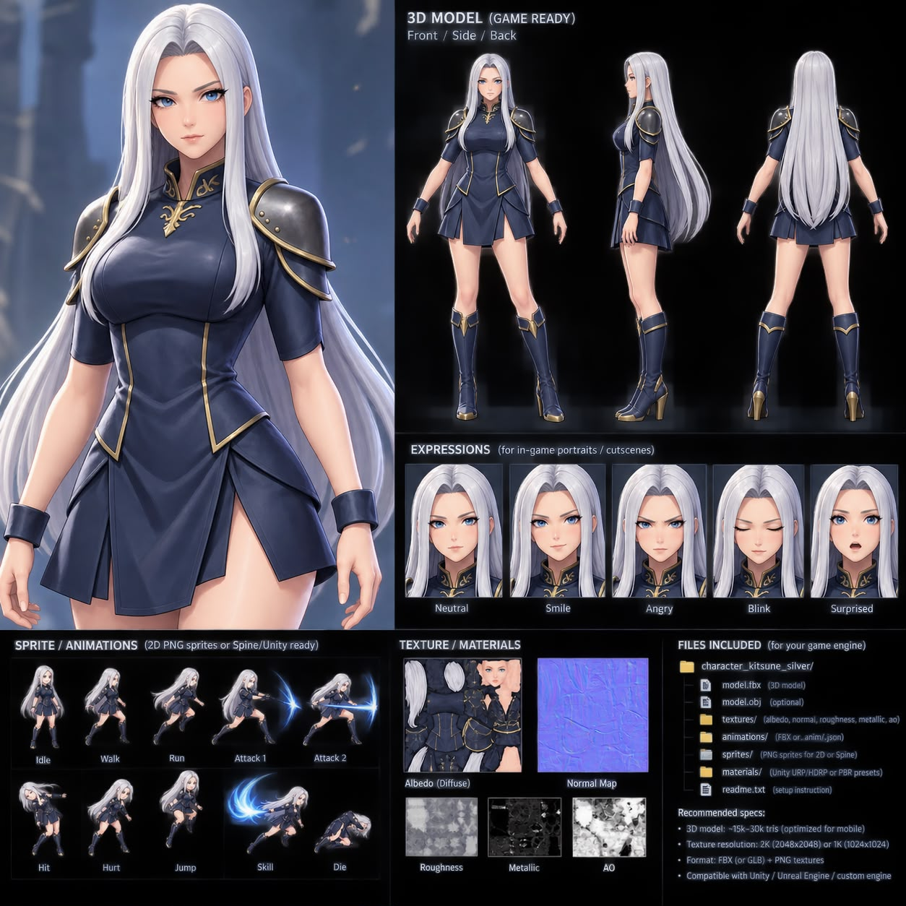

SOLO ADVENTURE

1AELITH SILVER KNIGHT
◇ THE FALLEN AWAKEN
Bertahan di Forsaken Sanctum
GELOMBANG 01 / 05Menanti kesatria
✦ 000:00
KONTROL SENTUH TAP UNTUK SKILL
FORSAKEN SANCTUMReruntuhan di balik kabut
N
Geser untuk bergerak & hindari zona merahTap skill di kanan; ambil orb hijau untuk HP · Diam tetap berbahaya
A blade of silver. A world of shadows.HTML5 CANVAS ◆ LOCAL SAVE